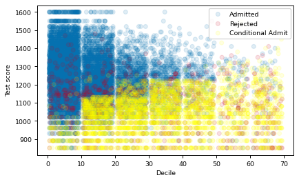
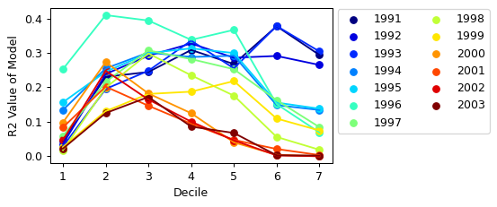

Miscellaneous, Unrelated Visualizations
I promise I can make more than just bar graphs and histograms. Here are some visualizations I made for my COLL 400 this semester using what I learned in this class.
Distribution of acceptances at University of Texas at Austin (UT Austin), 1996
Pseudo-R2 values for models predicting UT Austin acceptances using SAT scores and class decile
- Back to About and Misc